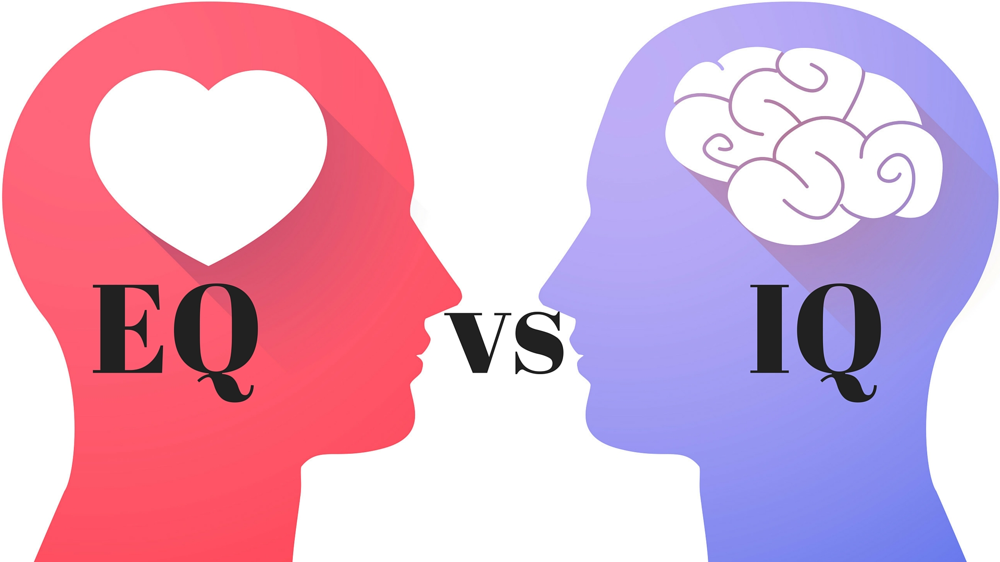

Emotional intelligence is the self awareness of thoughts and feelings. It'a the ability to recognise what's going on for you, or others, and manage your responses positively. You can train yourself to be emotionally intelligent by practicing mindfulness, self knowledge and self mastery, and creating useful mental habits.
EQ measures someone's ability to recognise emotions in themselves and the people around them. It's about making decisions which react positively to yourself and your peers. IQ measures someone's cognitive ability. It's about your ability to problem solve, use logical thinking, and approach complex problems.
EQ is an important aspect of maintaining a healthy, well rounded life. It's beneficial in building relationships, identifying and managing emotions, encouragement towards yourself and others, and reducing stress levels by thinking about your response to situations and feelings.
